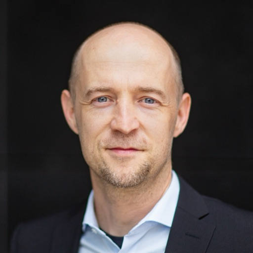

Jakob Abeßer
Professor for
Computational Humanities · Otto-Friedrich-Universität Bamberg
Senior Scientist ·
Fraunhofer Institute for Digital Media Technology (IDMT)
Member · DEGA,
ISMIR,
EURASIP,
IoS RN,
BaCAI
Study Rep. · M.Sc. CitH
I develop AI methods for analyzing audio and music by combining machine learning and digital signal processing. My research investigates how humans perceive complex acoustic scenes—recordings in which multiple sound events overlap—and translates these insights into machine-listening models across three interconnected areas: acoustic scene analysis (urban soundscapes, bio- and eco-acoustic monitoring), music information retrieval (music transcription, performance analysis, and competence assessment), and multimodal analysis of audio data in combination with text and images with applications for the digital humanities.
Profiles
Recent News
- Jul 2026 — Joined the Bamberger Zentrum für Künstliche Intelligenz (BaCAI)".
- Jun 2026 — Participating in WIAI25 event with a demo of an interactive sonification system developed by Dr. Marcello Lussana.
- May 2026 — New book chapter: Audio-Based Tools for Decontextualisation Detection published in Countering Disinformation in the Era of Generative AI.
- Feb 2026 — One-year research project ERBA-SOUND funded by the Smart City Research Lab, beginning April 2026.
- Nov 2025 — Three submissions and two late posters accepted for DAGA 2026 conference.
- Oct 2025 — Overview article on automatic bird call classification published in the Akustik Journal.
- Sep 2025 — Two papers accepted at DCASE 2025 Workshop on acoustic scene understanding and efficient classification.
- Sep 2025 — Appointed Professor of Computational Humanities at the University of Bamberg.
- Jun 2025 — Two papers accepted to the 2025 AES International Conference on Artificial Intelligence and Machine Learning for Audio.